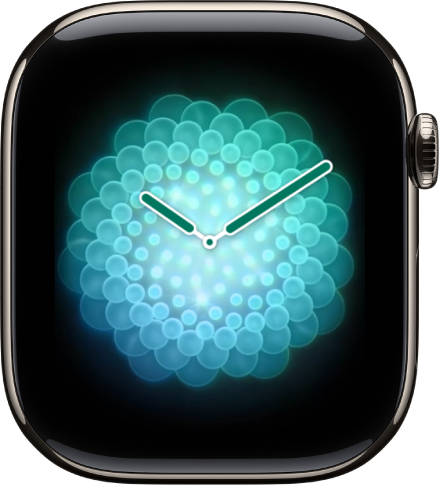

此表盘鼓励你关注放松和呼吸。只需轻点屏幕即可开始。
下方的文件数包括本地化资源。固件名称键能确认包的归属；组件的圆屏点击边界、亮屏过渡与 AOD 对照均待设备验证。
原始包 已解析属性表 Mach-O 方法与成员 ARM64 汇编 解出的图集
.strings × 88 .mov × 18 .car × 1 .plist × 1 无扩展名 × 1
原始包 已解析属性表 Mach-O 方法与成员 ARM64 汇编 解出的图集
.strings × 88 .mov × 18 .car × 1 .plist × 1 无扩展名 × 1
原始包 已解析属性表 Mach-O 方法与成员 ARM64 汇编 解出的图集
.strings × 88 .mov × 9 .car × 1 .plist × 1 无扩展名 × 1
NTKBreatheFaceBundle.bundleBREATHE_GALLERY_DESCRIPTION_2021EDIT_OPTION_LABEL_BREATHE_STYLE_FOCUS_2021EDIT_OPTION_LABEL_BREATHE_STYLE_ORBS_2021EDIT_OPTION_LABEL_BREATHE_STYLE_CALM_2021EDIT_OPTION_LABEL_BREATHE_STYLE_CLASSIC_2021色组与设备条件 共享色组与默认值
-[NTKAnalogBreatheFaceView tritium_createFaceAnimator];-[NTKAnalogBreatheFaceView tritium_prepareForActiveStateBurnInStudyWithDisplayDate:];-[NTKAnalogBreatheFaceView _handleEitherScreenWake];-[NTKAnalogBreatheFaceView tritium_prepareForInactiveStateBurnInStudy];-[NTKAnalogBreatheFaceView tritium_willTransitionToTritiumOffFromFrameSpecifier:];-[NTKAnalogBreatheFaceView tritium_createFaceAnimator];-[NTKAnalogBreatheFaceView _shouldAnimateComplicationsOnTap];-[NTKAnalogBreatheFaceView customizeFaceViewForListing:changeEvent:animated:];-[NTKAnalogBreatheFaceView screenDidTurnOffAnimated:];-[NTKAnalogBreatheFaceView tritium_willTransitionToTritiumOffFromFrameSpecifier:];+[NTKAnalogBreatheFace _faceClassOfFaceWithRichComplicationSlotsForDevice:];+[NTKAnalogBreatheFace _complicationSlotDescriptors];+[NTKAnalogBreatheFace _orderedComplicationSlots];-[NTKAnalogBreatheFace _numberOfOptionsForCustomEditMode:slot:];-[NTKAnalogBreatheFace _defaultOptionForCustomEditMode:slot:];-[NTKAnalogBreatheFace _indexOfOption:forCustomEditMode:slot:];-[NTKAnalogBreatheFace _optionAtIndex:forCustomEditMode:slot:];-[NTKAnalogBreatheFaceView _applyOption:forCustomEditMode:slot:];-[NTKAnalogBreatheFaceView _shouldAnimateComplicationsOnTap];-[NTKAnalogBreatheFaceView _complicationsPlatterColor];-[NTKAnalogBreatheFaceView _complicationsForegroundColor];+[NTKAnalogBreatheRichFace _complicationSlotDescriptors];+[NTKAnalogBreatheRichFace _richComplicationSlotsForDevice:];+[NTKAnalogBreatheRichFaceView isRichComplicationsEnabled];+[NTKBreatheFaceBundle complicationTypesBySlot];